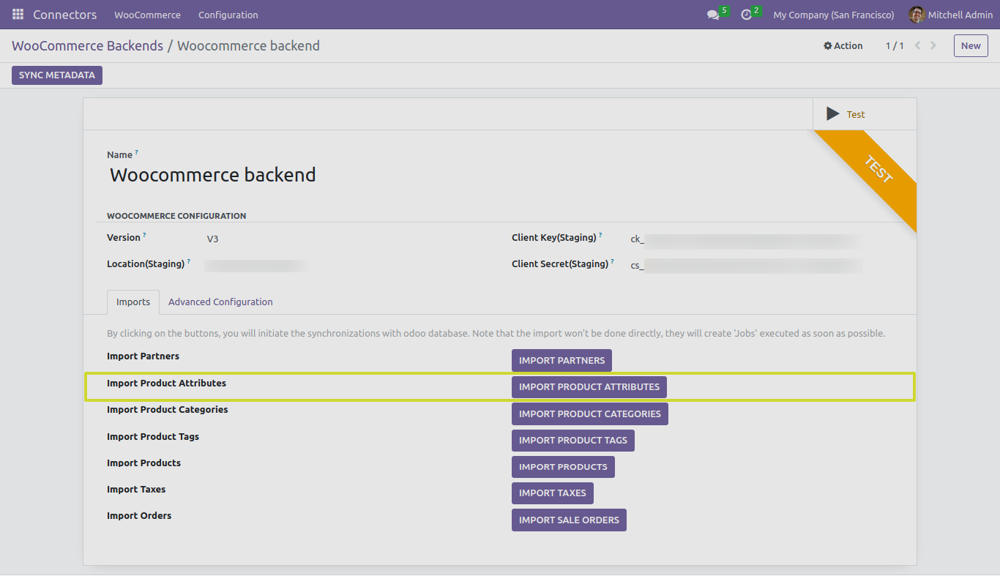

Product Attributes
In this section, we will explore the functionality of the “IMPORT PRODUCT ATTRIBUTES” button and its different test cases when working with the Odoo Woocommerce Connector.
Next Steps
In the upcoming sections, we will delve into each of the test cases related to importing product tags, providing detailed instructions and insights.